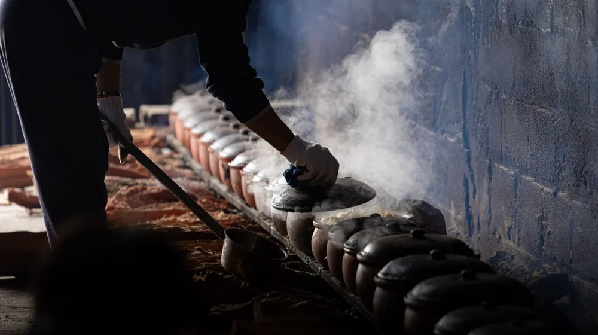

종가집 내림음식의 비밀, 종부 조리법의 4가지 핵심 특징
사진: Theodore Nguyen / Pexels (무료 이미지, 출처 표기)
대대손손 내려오는 종가집의 맛, 도대체 일반 요리와 무엇이 다를까요? 종부의 손끝에서 완성되는 내림음식은 단순한 전통을 넘어 현대인에게도 훌륭한 건강식의 지침이 됩니다. 겉으로 보기에는 평범해 보이지만, 한 입 먹어보면 깊은 울림을 주는 종부 조리법의 핵심 특징을 알기 쉽게 정리해 드립니다.
1. 시간과 바람이 만드는 맛, 발효와 숙성의 과학

종부의 조리법에서 가장 핵심이 되는 요소는 바로 '시간'입니다. 대부분의 내림음식은 며칠 혹은 몇 년에 걸쳐 발효된 장류와 식초를 기반으로 맛을 냅니다. 오랜 시간 숙성된 씨간장과 덧간장은 인위적인 단맛이나 짠맛 대신 깊은 감칠맛을 냅니다.
특히 계절과 날씨의 변화를 그대로 활용하는 옹기 숙성 방식은 유익한 발효균을 활성화합니다. 이를 통해 식재료 고유의 영양 성분이 파괴되지 않고 몸에 흡수되기 좋은 상태로 변하게 됩니다.
2. 가문마다 다른 지역별 종가음식 특징 비교
우리나라 종가음식은 각 지역의 기후와 풍토, 그리고 가문의 역사에 따라 독창적인 조리법을 발전시켜 왔습니다. 농촌진흥청의 연구 자료에 따르면, 남부 지방은 변질을 막기 위해 소금과 젓갈을 적극적으로 사용한 반면, 중부 지방은 담백하고 정갈한 맛이 특징입니다.
3. 인공 조미료 없는 100% 천연 조미료 배합법
종부의 조리법에는 시판 화학 조미료가 들어가지 않습니다. 대신 표고버섯, 다시마, 멸치, 황태 등을 곱게 갈아 만든 천연 가루와 직접 담근 발효액을 적절한 비율로 섞어 씁니다. 이는 단순히 짠맛을 내는 것이 아니라 재료들의 맛을 자연스럽게 연결해 줍니다.
가장 흥미로운 점은 채소를 데치거나 고기를 재울 때도 가문만의 독특한 육수를 사용한다는 것입니다. 쌀뜨물, 보리새우 우린 물 등을 기본 베이스로 삼아 요리의 깊이를 더합니다.
4. 현대 가정에서 실천하는 종부의 요리 원칙 3가지
종가의 내림음식 정신은 현대 식탁에서도 충분히 응용할 수 있습니다. 거창한 도구가 없어도 다음 세 가지 원칙만 기억하면 깊은 맛을 낼 수 있습니다.
- 제철 식재료 우선 사용: 가장 영양이 풍부하고 맛이 좋은 제철 재료를 최소한으로 가공하여 올립니다.
- 양념의 순서 지키기: 설탕(단맛), 소금(짠맛), 식초(신맛) 순서로 양념을 넣어 재료 속까지 맛이 골고루 배게 합니다.
- 기다림의 미학: 나물을 무치거나 고기를 재운 뒤 바로 먹지 않고, 양념이 스며들도록 최소 10~20분간 숙성 시간을 둡니다.
5. 내림음식 조리 시 주의해야 할 점
종부의 조리법을 배울 때 가장 당황스러운 부분은 정확한 계량(그램 또는 밀리리터)이 없다는 점입니다. 대부분 '손대중'이나 '적당히'라는 표현을 쓰는데, 이는 계절별 식재료의 수분 함량이나 염도가 매번 다르기 때문입니다.
따라서 레시피의 숫자만 기계적으로 따라 하기보다는, 재료를 직접 만져보고 맛을 보며 감각을 익히는 것이 중요합니다. 전통 종가음식에 대한 체계적인 가이드라인이나 체험 정보는 농촌진흥청 국립농업과학원 홈페이지를 통해 시대별, 가문별로 고증된 데이터를 확인해 보시는 것을 추천합니다.
🔗 이 글도 함께 보면 좋아요: 종가음식 프라이빗 다이닝 가격 비교: 10만 원대부터 명품 코스까지
관련 추천 상품
이 포스팅은 쿠팡 파트너스 활동의 일환으로, 이에 따른 일정액의 수수료를 제공받습니다.
한눈에 보는 상품 목록
전통 숨쉬는 옹기 항아리
전통 방식으로 제작되어 발효 음식을 보관하기에 최적화된 숨쉬는 옹기입니다.
국산 천연 조미료 분말 세트
표고버섯, 다시마, 멸치 등 자연 재료만을 갈아 만든 깊은 감칠맛의 조미료 세트입니다.